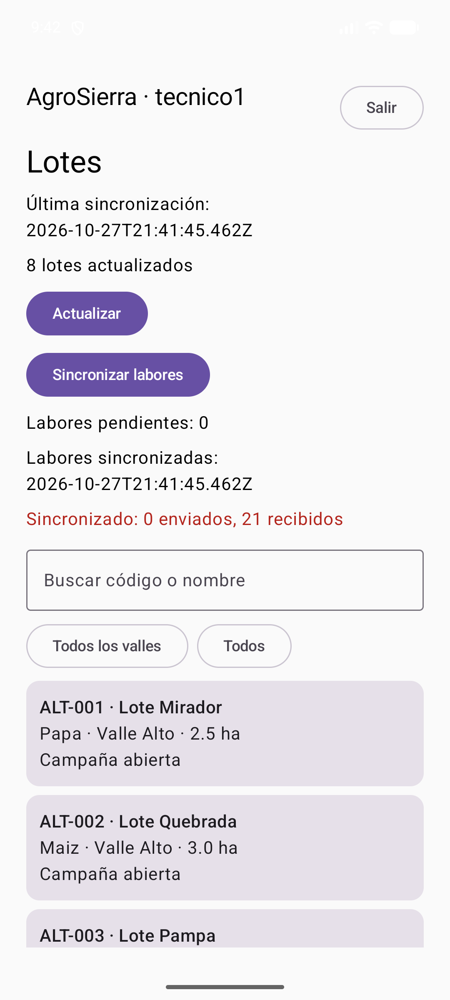

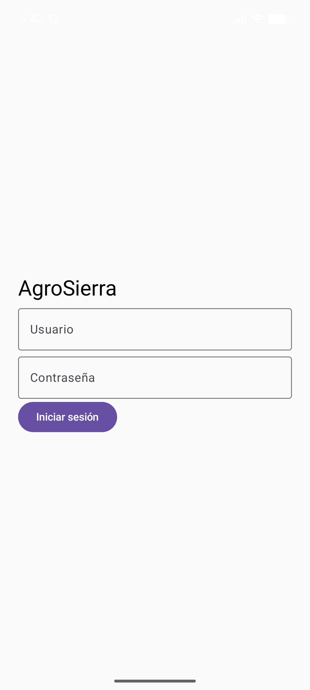
Universidad Peruana Unión · Desarrollo de Aplicaciones Móviles
Unidad 2 · Versión A · Caso AgroSierra
Estudiante: Richard Ismael Logacho Rivera
Evidencias obtenidas el 27 de octubre de 2026
AgroCampo (Kotlin Multiplatform / Android) · AgroAPI (Kotlin, Spring Boot, Java 21, H2)
| Repositorio | Enlace | develop actual |
|---|---|---|
| AgroCampo | https://github.com/07Ismael02/AgroCampo-Logacho_ExaU2 | 0a86326 (merge PR #6) |
| AgroAPI | https://github.com/07Ismael02/AgroAPI-Logacho_ExaU2 | fa6b809 (merge PR #5) |
v1.0-unidad2| Repositorio | Apunta a | Alcance |
|---|---|---|
| AgroCampo | dbaf20b (merge PR #5) | Incluye PR #1 a #5. No incluye cambios posteriores: PR #6 (evidencias, 0a86326), la corrección de «Salir» (fix/cerrar-sesion-logacho, 62bd727) ni las ramas de documentación. |
| AgroAPI | fa6b809 (merge PR #5) | Igual al develop actual. No incluye la rama docs/entrega-final-logacho (README y colección). |
| Repositorio | PR |
|---|---|
| AgroCampo | #1 Estructura KMP · #2 Autenticación Ktor y sesión segura · #3 Lotes local-first con SQLDelight · #4 Labores y persistencia por cuenta · #5 Sincronización offline-first · #6 Evidencias de entrega |
| AgroAPI | #1 Persistencia y semilla · #2 RN-01 a RN-04 · #3 Inicio de sesión y filtro JWT · #4 Contrato REST · #5 Deserialización y errores JSON por campo |
| Repositorio | Rama | Contenido |
|---|---|---|
| AgroCampo | fix/cerrar-sesion-logacho | Corrección del botón «Salir» (sección 3). |
| AgroCampo | docs/evidencias-corregidas-logacho | Este documento, capturas y colección actualizadas. |
| AgroAPI | docs/entrega-final-logacho | README completo, colección Postman y su ejecución. |
Entorno de prueba: emulador Android Pixel_8; AgroAPI local (develop fa6b809, H2, Java 21) en http://localhost:8080, accedido desde el emulador como http://10.0.2.2:8080.
Capturas 1 a 7 con el APK de develop; la captura 1 se tomó con el APK de fix/cerrar-sesion-logacho, cuya única diferencia es el margen de las barras del sistema.
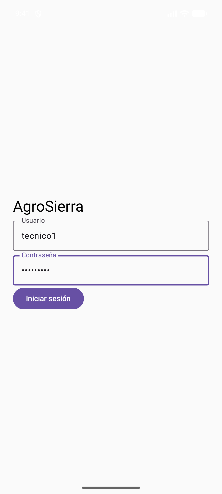
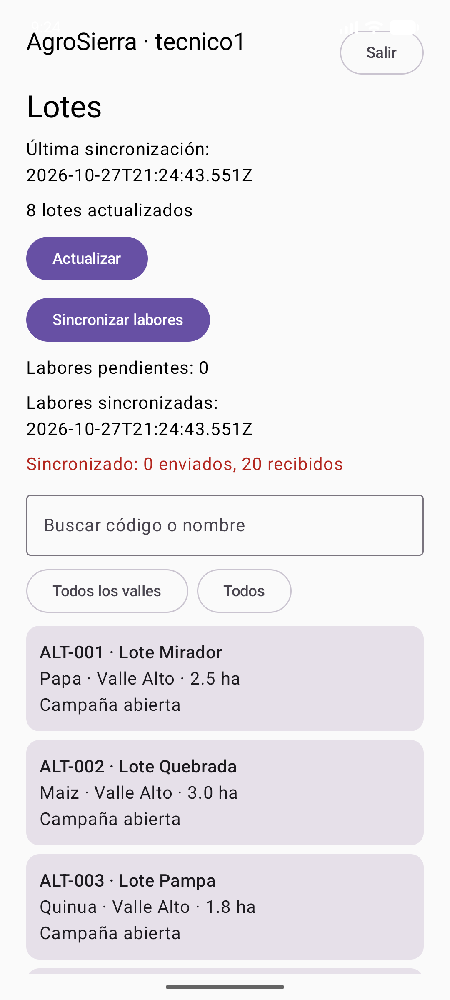
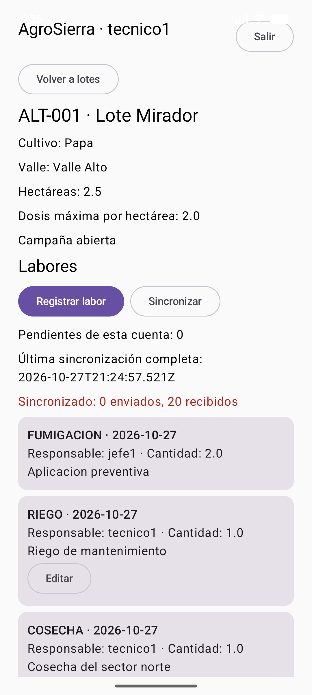
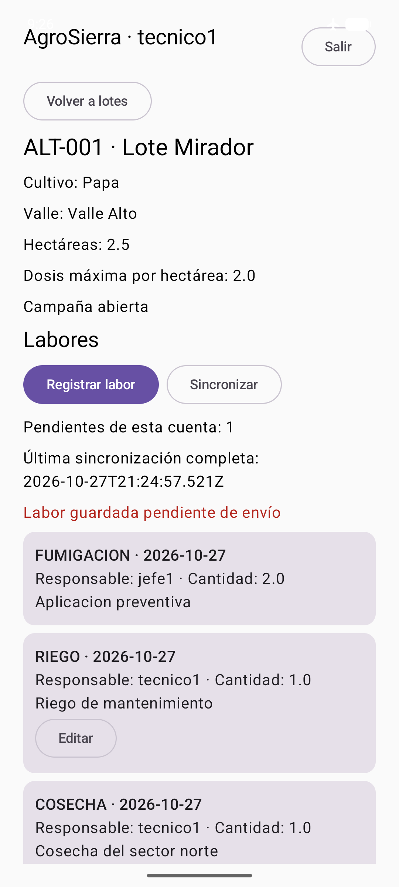
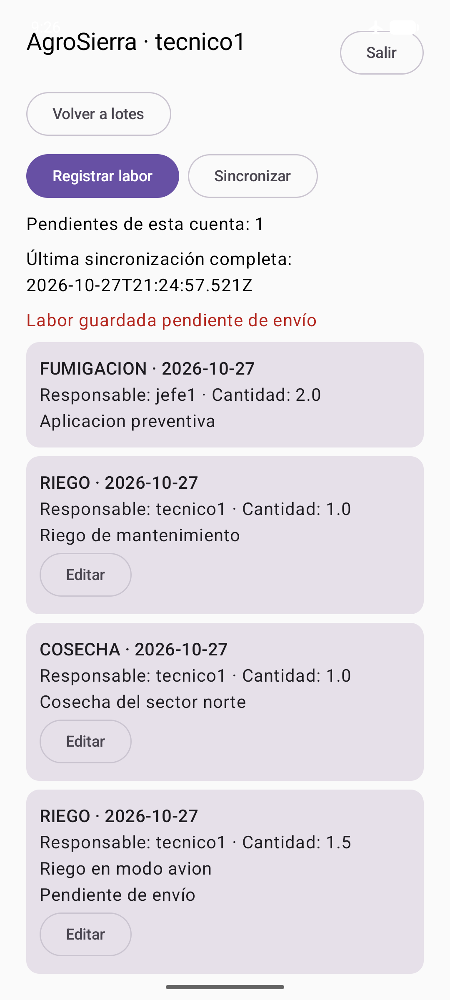
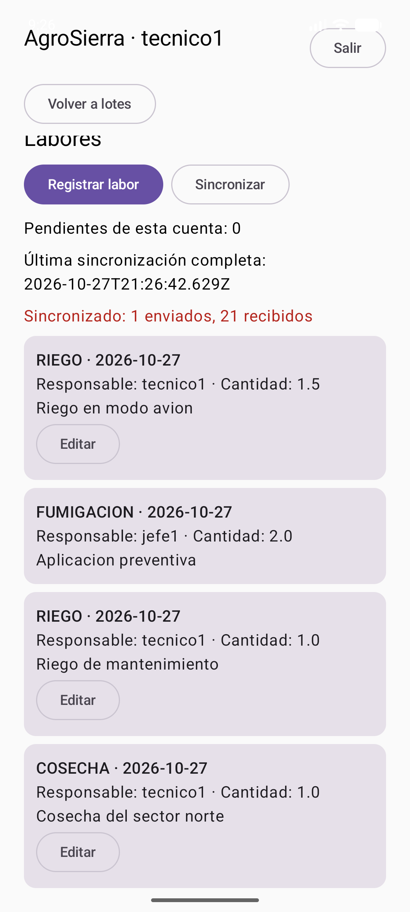
Tras la captura 6, AgroAPI devolvió la labor «Riego en modo avion» una sola vez, con ID de servidor 1000 (fila 5 de la tabla HTTP); su ID local provisional era negativo.
Causa: la aplicación dibuja de borde a borde y el botón «Salir» quedaba parcialmente bajo la barra de estado (0–132 px), que absorbía los toques. La lógica de cierre ya era correcta. Corrección (62bd727, rama fix/cerrar-sesion-logacho): safeDrawingPadding() en la raíz de AgroApp. Pruebas tras la corrección: 41/41 y assembleDebug exitoso.


El archivo de preferencias cifrado pasa de contener el token (valor omitido) a <map />: el token se borra del almacenamiento seguro.
prueba-logout.txt)
# Prueba real de cierre de sesión — emulador Pixel_8 — 2026-10-27T16:42:08-05:00 — APK de fix/cerrar-sesion-logacho
## Antes de Salir: shared_prefs/agro_sesion_cifrada.xml
<string name="dato"><token cifrado, omitido></string>
<string name="iv">I6zs9qS1opSRwxDp</string>
## Pantalla tras pulsar Salir (uiautomator)
AgroSierra
Iniciar sesión
## Después de Salir: shared_prefs/agro_sesion_cifrada.xml
<map />
## Tras cerrar y reabrir la app (no debe restaurar sesión)
AgroSierra
Iniciar sesión
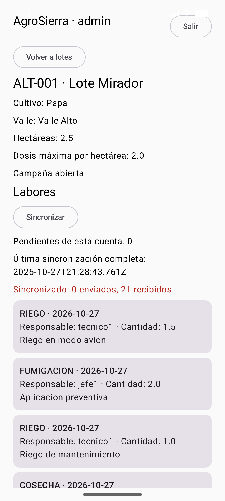
La interfaz oculta las acciones sin privilegio, como exige el examen, por lo que no se puede provocar un 403 por privilegio desde la app sin añadir botones artificiales.
La única vía legítima es la regla de 24 horas: AgroAPI responde 403 «No puede editar esta labor» cuando un técnico edita su labor después de 24 h, y la app ofrece «Editar» porque esa regla solo la verifica el servidor. Hoy no es reproducible sin alterar datos o el reloj: las labores de tecnico1 con más de 24 h (IDs 10 y 20) están en lotes con campaña cerrada, donde la app no ofrece «Editar», y el resto tienen menos de 24 h. No se modificaron permisos, datos ni el reloj para producir una captura.
El rechazo del backend se demuestra con las peticiones reales E3, E4 y 9 de la sección 5: tecnico1 sin LABOR_ELIMINAR, admin sin LABOR_CREAR y tecnico1 sin CAMPANIA_CERRAR.
Peticiones reales con curl contra AgroAPI develop fa6b809 (27/10/2026), equivalentes a la colección Postman. Respuestas completas en evidencias/api-coleccion-ejecucion.txt; los JWT se omiten.
| # | Endpoint | Usuario | Esperado | Obtenido | Fragmento relevante de la respuesta |
|---|---|---|---|---|---|
| 1 | POST /api/v1/auth/login | tecnico1 | 200 | 200 | token emitido, "rol":"TECNICO" |
| 2 | GET /api/v1/usuarios/me | tecnico1 | 200 | 200 | "id":1, "rol":"TECNICO" |
| 3 | GET /api/v1/lotes | tecnico1 | 200 | 200 | "totalElementos":3, "totalPaginas":1, primer elemento "codigo":"ALT-001" |
| 4 | GET /api/v1/lotes/1 | tecnico1 | 200 | 200 | "id":1, "codigo":"ALT-001", "nombre":"Lote Mirador" |
| 5 | GET /api/v1/lotes/1/labores | tecnico1 | 200 | 200 | "totalElementos":4, "totalPaginas":2, primer elemento "observacion":"Riego en modo avion" |
| 6 | POST /api/v1/labores | tecnico1 | 201 | 201 | "id":1002, "cantidad":1.0, "observacion":"Creada desde la coleccion" |
| 7 | PUT /api/v1/labores/1002 | tecnico1 | 200 | 200 | "id":1002, "cantidad":1.5, "observacion":"Corregida desde la coleccion" |
| 8 | DELETE /api/v1/labores/1002 | jefe1 | 204 | 204 | (sin cuerpo, 204 No Content) |
| 9 | POST /api/v1/lotes/1/cerrar-campania | tecnico1 | 403 | 403 | "message":"Privilegio insuficiente" |
| E1 | POST /api/v1/labores | tecnico1 | 400 | 400 | "message":"Datos inválidos", "validationErrors":{"cantidad":"debe ser mayor que 0"} |
| E2 | GET /api/v1/usuarios/me | (sin token) | 401 | 401 | "message":"Debe iniciar sesión" |
| E3 | DELETE /api/v1/labores/1 | tecnico1 | 403 | 403 | "message":"Privilegio insuficiente" |
| E4 | POST /api/v1/labores | admin | 403 | 403 | "message":"Privilegio insuficiente" |
La ruta 9 se ejecutó solo en su variante 403. La variante 200 (jefe1) está en la colección, pero no se ejecutó para no cerrar la campaña de un lote de la semilla.
evidencias/AgroAPI_Logacho.postman_collection.json (Postman v2.1), publicada en GitHub en AgroCampo (rama docs/evidencias-corregidas-logacho) y en AgroAPI (rama docs/entrega-final-logacho, carpeta docs/). Contiene 16 peticiones: las nueve rutas (login, /usuarios/me, /lotes, /lotes/{id}, /lotes/{id}/labores, POST/PUT/DELETE /labores y /lotes/{id}/cerrar-campania), un caso 400, un caso 401 y tres casos 403.
commonTest).\gradlew.bat :shared:testAndroidHostTest :androidApp:assembleDebug
| Ejecución | Resultado |
|---|---|
develop dbaf20b con --rerun-tasks (16:16) | 41 pruebas, 0 fallos, 0 errores · BUILD SUCCESSFUL · APK generado |
fix/cerrar-sesion-logacho (16:38) | 41 pruebas, 0 fallos, 0 errores · BUILD SUCCESSFUL |
| Clase | Pruebas | Fallos | Errores |
|---|---|---|---|
| AutenticacionTest | 4 | 0 | 0 |
| LaborPersistenciaTest | 5 | 0 | 0 |
| LaborReglasTest | 2 | 0 | 0 |
| LaboresContratoTest | 3 | 0 | 0 |
| LotesContratoTest | 4 | 0 | 0 |
| LotesLocalFirstTest | 6 | 0 | 0 |
| SincronizadorLaboresTest | 17 | 0 | 0 |
AutenticacionTest, LaboresContratoTest, LotesContratoTest y SincronizadorLaboresTest están en commonTest. Usan el motor HTTP simulado (MockEngine) y SQLite en memoria. El controlador JDBC se provee con expect/actual desde androidHostTest, por eso se ejecutan con esa tarea. Cubren la conversión de DTO, la traducción de errores, el registro sin conexión y el orden de sincronización. No se ha validado iOS.
Informes Surefire generados el 27/10/2026 a las 14:47, antes de estas evidencias: ApiRestTest 3, PersistenciaSemillaTest 3, ReglasNegocioTest 4, SeguridadJwtTest 3, ValidacionJsonTest 8 · 21 pruebas, 0 fallos, 0 errores.
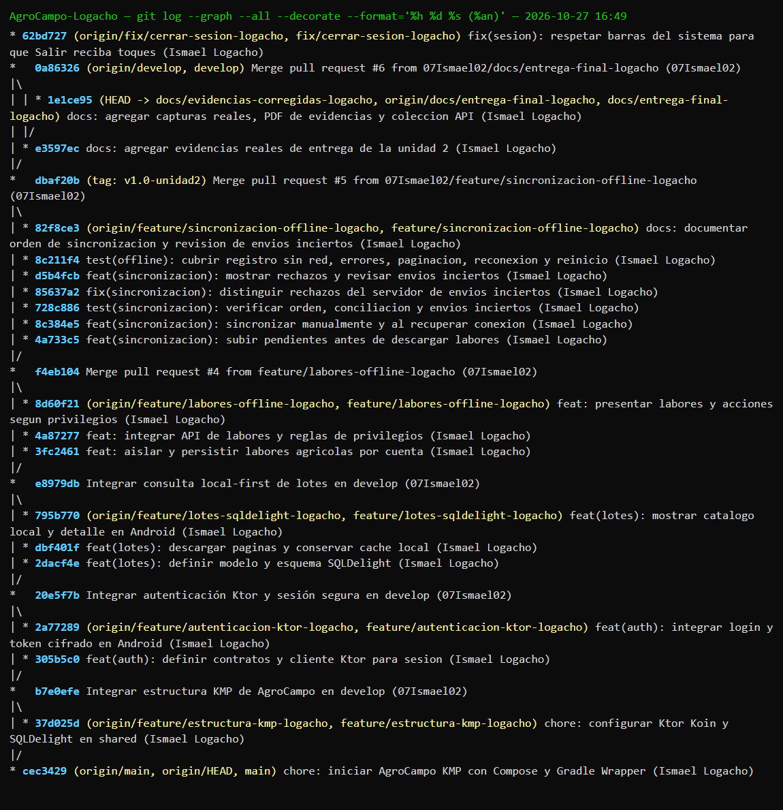
git log --graph --all --decorate del repositorio local, actualizado con git fetch. Muestra las ramas remotas, los merges de PR #1 a #6 y la etiqueta.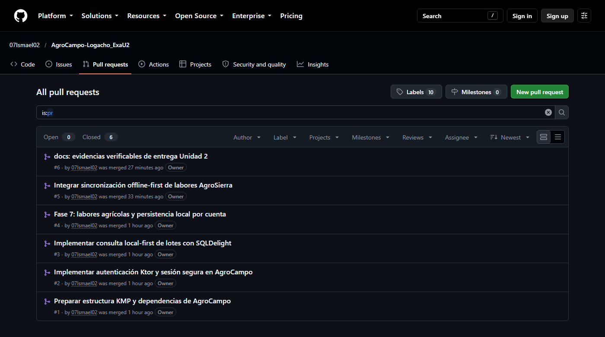
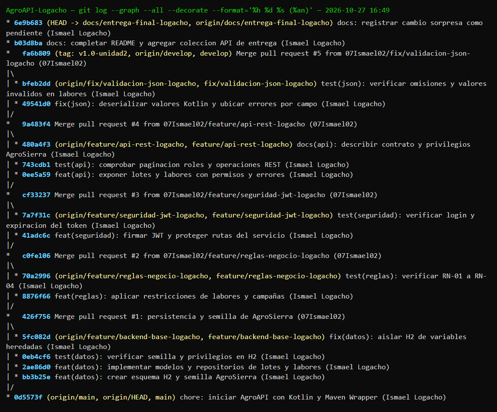
git log --graph --all --decorate de AgroAPI, actualizado con git fetch.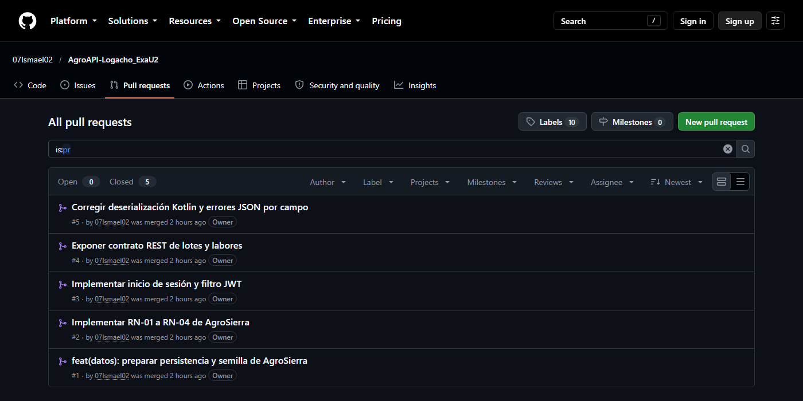
El «Network graph» de GitHub también se capturó (capturas/github_red_*.png). No se usa como gráfico principal porque GitHub lo actualiza una vez al día y recorta los commits más recientes.
fix/cerrar-sesion-logacho, pendiente de PR. No forma parte de develop ni de la etiqueta v1.0-unidad2.POST /lotes/{id}/cerrar-campania no se ejecutó, para no alterar la semilla.No asignado por el docente a la fecha de estas evidencias. No se implementó ninguna variante SC-A/B/C/D.